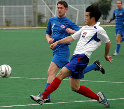
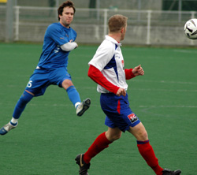
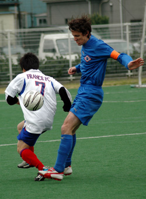
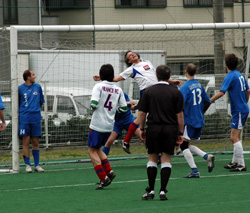

|
Hachioji Park, Saturday 31st March, Saitama Jets eased their relegation worries with a come-from-behind victory over an ill-tempered France side at Hachiogi Park early on Saturday morning. The French opened the scoring against the run of play midway through the first half and were still in front as the game entered the final 15 minutes, but two clinical finishes from Nate Gildart snatched all three points for the team from Saitama.

Having picked up just 3 points in the six months between September and February the Saitama Jets went into their busy March schedule knowing that relegation was a real possibility; however a bumper haul of 10 points from 5 games has seen the Jets soar to 6th in the table and has eased fears of an immediate return to TML2.
Having lost a game they should have drawn and drawn a game they should have won, against Sala and Jetro respectively, the Jets went into the game against France knowing that defeat would plunge them back into the relegation fight. The French, 3 points behind but with games in hand similarly could not afford to lose. Under such circumstances it was no surprise that the game was fractious and ill-tempered, moving TML progenitor, Sid Lloyd, to comment at half-time that there was more kicking of people than of the ball.
The Jets started well, pinning the French back and forcing a number of corners, but creating nothing clear-cut, the closest they came to scoring during this period of dominance was a Loren run and shot which sailed just wide. As against Sala, when the Jets dominated the first half but went in trailing, failure to score when on top was to prove costly. Following a break in play for the referee, who was excellent, by the way, to sort out a number of disputes arising from a French aversion from being tackled, the Jets fell behind to a well-worked and well taken goal. Breaking down the right side the French winger had far too much time to send in dangerous low cross which zipped right across the 6-yard box, taking out the entire Jets defence and goalkeeper. Just as it looked as if no one would get on the end of it, French dangerman, Yoshikoshi, came sliding in out of nowhere at the back post to send the ball high into the net from 5 yards. A hammer blow to the Jets and from that point on they ceased to be effective in any area of the field. The game degenerated even further from this point and half-time came as something of a relief to all concerned.
As always the Jets had turned up in numbers, 18 in all on the day, which meant that 2 players wouldn’t even make the squad and that a number of others would get a very limited amount of time. Before the game it had been decided that substitutions would be made regularly in order to keep players fresh for the latter stages of the game. At this point it would be appropriate to pay tribute to those Jets who have turned up every week, but have played few actual minutes on the pitch. It has undoubtedly been advantageous to the club to have such commitment; it has made those playing play that much harder knowing that there is someone eager to step in should they under-perform, it has also given much needed vocal support to those on the pitch, and, perhaps most importantly has given the Jets an advantage over teams who have only been able to muster 11 or 12 players for particular games. It was the effective use of substitutions which eventually allowed the Jets to prevail on this day.
The second half started much as the first half ended; with little quality on show. As the half progressed the French visibly began to tire and a groin injury to one of their midfielders left them with the bare 11 and from here the Jets began to dominate once more. Good work from Sasaki on the left gave striker Shimizu a chance inside the 6-yard box, but he was denied by a very good save from the ‘keeper. The Jets kept pressing and were now looking much stronger than their opponents, but still chances were few and far between. Enter Nate Gildart. With 15 minutes to go, following good work by Ryan Botta on the right, the ball was played into Gildart just inside the area, with his back to goal, 15 yards out and with a defender in close attendance, the Canadian took one touch, turned and unleashed a stinging low drive which, although seemingly covered by the ‘keeper, found its way inside the near post such was its ferocity. A fantastic strike for 1-1, and the Jets sensed that there was yet more to be had from this game. The French tried to respond but it was evident they were a spent force and the Jets rampaged forward, now controlling the midfield and able to send penetrating balls left, right and forward with impunity. A few minutes later more strong running from Loren forced a corner on the right, the French failed to clear and it fell to Gildart at the back post. Despite the awkward bounce the man who had minutes earlier poached the equalizer, somehow brought it under control and sent the ball calmly into the roof of the net to spark wild celebrations both on the pitch and on the touchline. There was no way back for the French and the Jets should have made it 3 in the final minutes, but 2 would suffice to give the Jets a great chance of staying up and to plunge the French back into the relegation mire.
Attention now turns to another massive game next week against the Celts, whose surprise defeat to Jetro has left them, if not in the last-chance saloon then certainly in the pub next door. Having played more games than all their rivals the Jets know they cannot afford to slip up against the Celts and will have to be at their battling best to finally secure their place in the top-flight for next season.
Report by Rob Keating
|